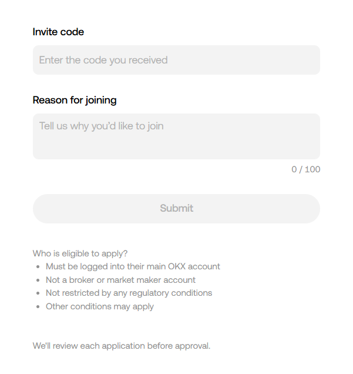

재가입 및 거래량 기준 완화 안내
OKX 탈퇴 후 3일 뒤부터 재가입 가능하고, 재가입 시 레퍼럴 코드 변경도 가능합니다.
39400975I am the user of UID: [여기에 본인 UID 입력]
I would like to bind my account to affiliate channel ID: 39400975
123456789라면:I am the user of UID: 123456789
I would like to bind my account to affiliate channel ID: 39400975

▲ 위와 같은 양식에 Invite code와 Reason for joining을 입력하세요